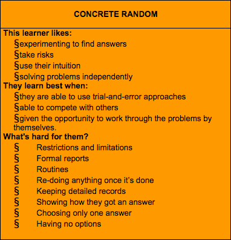

When I started blogging back in 2001 or so, at the young age of 13, tests--personality tests, IQ tests, behavioral assessments, Which-90's-Band-Are-You-? tests--were all the rage. There were so many of them, and each test claimed to be able to reveal more about myself then even I knew. My spiritual color is yellow, you say? Oh, that means that I am a person with a happy disposition blah blah blah...
I tell you this so you can understand that I was a little reluctant to take *gasp!* even more such tests as part of my first foray into Dev Bootcamp
I realize now that the important distinction that I did not make when I was much younger--other than the fact that a lot of those tests for bloggers were not at all scientifically backed--is that these tests were never designed to cover the entire spectrum of a person. People are simply too complex to be categorized so easily. Rather, such tests are meant to serve more as a guide, to help you figure out things like how you might learn better (as is the case here).
Note, for example, the photo above. Anthony Gregorc would classify me as a Concrete Random, according to the Mind Styles model that he created. I read through the list, and yeah, that sounds exactly like how I learn best. At the encouragement of Dev Bootcamp, I thought that I should really think about the implications of results like this more. How does this apply to me exactly? How can I utilize this knowledge to aid me in my learning?
I think about how I've tackled my experience with DBC so far, and this lists confirms to me that I have been confronting it the right way--with lots of experimentation, trial-and-error and a healthy dose of intuition and alone time. It doesn't hurt that there is a bit of classroom environment at DBC as well, however unconventional it might be.
In terms of avoiding factors that make learning challenging for me, well...I've always known that I've greatly disliked having to redo things. I guess the solution there is just to learn something or do something well enough the first time, so that I don't have to do it again. There are so many ways that I can use such results as a guide to aid me in my learning.
However, the test that really hit home was not the Mind Styles test, which only really told me things I already knew and was willing to admit to myself. Rather, the test that made an impact was having to categorize myself with a Fixed vs. Growth Mindset. It isn't your usual test--you don't tick boxes, or circle answers, or pick the photo that you find most compelling. In this test, you read through a list and figure out for yourself which camp you belong to based on the descriptions.
It pained me to note that I was more often than not in the Fixed Mindset camp.
Fortuntely, with this knowledge also comes acknowledgement. I was aghast; this simply cannot stand! Now that I knew what was stopping my growth, it was time to change some things.